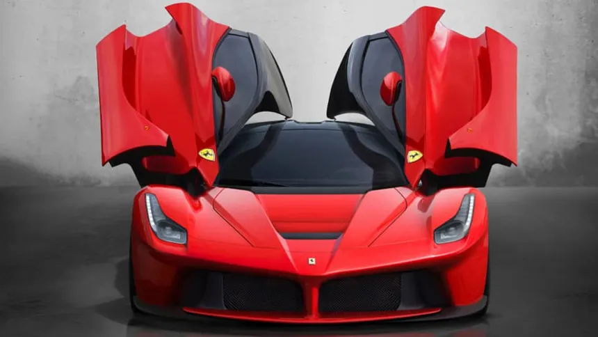

The Ferrari LaFerrari Aperta is a limited-edition hybrid supercar that celebrates the 70th anniversary of Ferrari. It is the open-top version of the LaFerrari, with only 210 units produced. The LaFerrari Aperta’s powertrain is the same as the LaFerrari’s, using hybrid technology to combine a mid-rear, naturally-aspirated V12 engine with an efficient 120kW electric motor. This results in a combined output of 950 horsepower and 664 lb-ft of torque.
